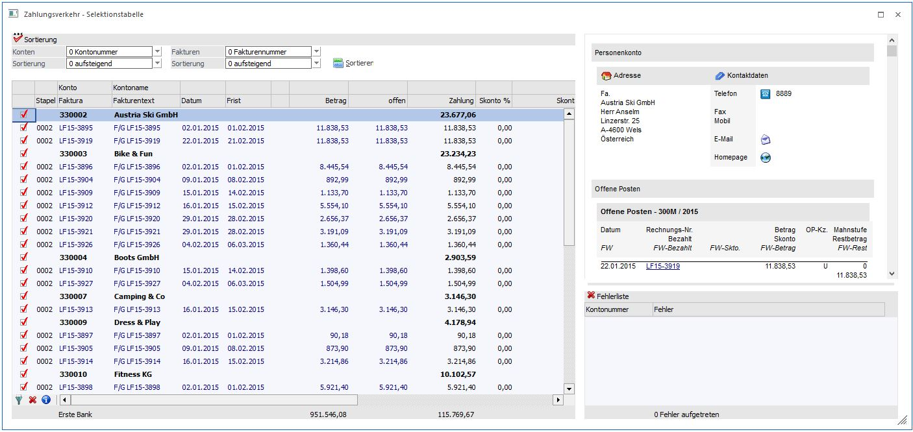
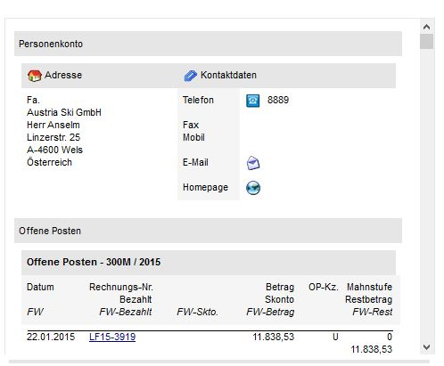
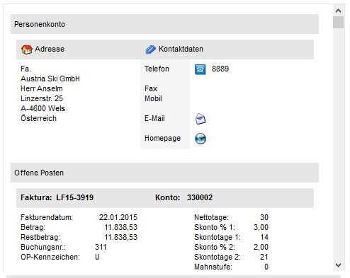
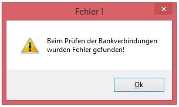
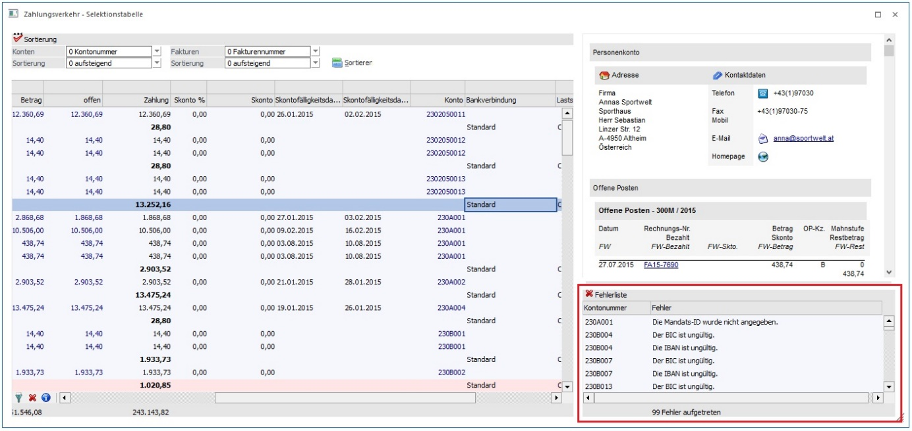
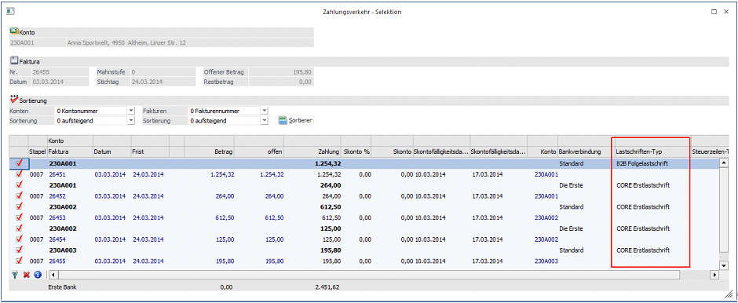
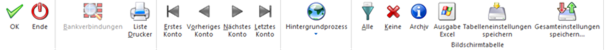
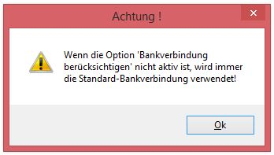
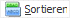

Die Zahlungsverkehr - Selektionstabelle ist ein eigenes Fenster außerhalb des Zahlungsverkehrs.
Während das Fenster geöffnet ist, kann im dahinter geöffneten "Ausgabe"-Fenster kein Button geklickt und auch kein Schritt in der Assistenten-Tabelle ausgewählt werden.
In der Selektionstabelle werden alle fälligen OPs entsprechend den zuvor definierten Parametern dargestellt. Vor jeder Kontonummer und vor jeder Faktura gibt es eine Checkbox. Durch Setzen des Flags vor der entsprechenden Kontonummer werden alle Fakturen dieses Kontos für den Zahlungsverkehr selektiert. Sollen nur ausgewählte Fakturen für die Zahlung vorgesehen werden können durch Setzten dieses Flags innerhalb des entsprechenden Kontos einzelne Fakturen selektiert oder deselektiert werden. In der Spalte "Stapel" wird die Stapelnummer des Zahlungsstapels dargestellt. Wollen Sie eine bestimmte OP manuell in einen anderen Stapel verschieben können Sie die Stapelnummer auf eine andere bestehende Stapelnummer ändern.

Jede Überweisungseinheit besteht aus einer Summenzeile (pro Konto) und den darunter stehenden einzelnen OP-Zeilen (die in Summe natürlich den darüber dargestellten Gesamtbetrag ergeben). Ist der Summenbetrag positiv, könnte die Überweisung für das Konto durchgeführt werden. Ist der Summenbetrag negativ, wäre der Überweisungsbetrag für das Konto ebenfalls negativ - womit das Konto beim endgültigen Überweisungslauf selbstverständlich abgelehnt würde.
Da sich erst aus der Zusammensetzung der einzelnen OP-Zeilen in der Bearbeitungstabelle eine positive oder negative Gesamtsumme errechnet (je nachdem, welche Rechnungen oder Gutschriften für den Stapel selektiert worden sind), müssen im ersten Schritt ALLE Konten mit fälligen OPs für die Bearbeitung freigegeben werden. Erst beim Verschieben in die anderen Stapel oder den Überweisungslauf selbst wird die Summe pro Konto bezüglich Vorzeichen geprüft und - sofern die Überweisung einen negativen Betrag ergeben würde - abgelehnt.
In der Summenzeile wird die für den Stapel eingestellte Hausbank mit dem aktuellen Saldo angezeigt. In derselben Zeile sehen Sie auch die Summe der zu überweisenden OPs.
Pro OP-Zeile können Sie auch noch manuell den Zahlungsbetrag und den Skontobetrag editieren, falls Sie den Zahlungsvorschlag (der selbstverständlich die in den Fakturen gegebenen Konditionen bezüglich Skontoberechnung automatisch berücksichtigt) noch überarbeiten wollen.
Wird die Option "Bankverbindung berücksichtigen" verwendet, kann durch einen Doppelklick auf die Bankverbindung eine andere Bankverbindung aus den weiteren Bankverbindungen des Personenkontos ausgewählt werden. Sollten dadurch mehrere Summenzeilen pro Konto mit gleicher Bankverbindung existieren. Über den Sortieren-Button werden die einzelnen OP-Zeilen zu einer Summenzeile zusammengefasst.
Durch einen Doppelklick auf die Bankverbindung können über den Bearbeiten-Button innerhalb des Fensters "Bankverbindungen" fehlerhafte Mandatsdaten bearbeitet werden.
Ø Faktura
Im Kopfbereich des Fensters werden alle Informationen der jeweils aktuell angewählten OP dargestellt (Fakturennummer, Fakturentext, Datum, Rest offen, Mahnstufe, etc.).
Ø Sortierung
Im Selektionsfenster des Zahlungsverkehrs ist es möglich, die einzelnen Bearbeitungszeilen umzusortieren.
Ø Konten
Wahlweise kann die Sortierung nach
ü Kontonummer
ü Kontobezeichnung
ü Postleitzahl
ü Vertreter
erfolgen.
Aus der Auswahllistbox kann gewählt werden, ob die Sortierung aufsteigend (kleinster Wert am Anfang) oder absteigend (größter Wert am Anfang) vorgenommen werden soll.
Ø Fakturen
Wahlweise kann die Sortierung nach
ü Fakturennummer
ü Datum
ü Fakturenbetrag
ü Zahlungsbetrag
erfolgen.
Aus der Auswahllistbox kann gewählt werden, ob die Sortierung aufsteigend (kleinster Wert am Anfang) oder absteigend (größter Wert am Anfang) vorgenommen werden soll.
Die Informationen zu Konto und Faktura werden in einem OIF angezeigt. Wenn der Focus in einer Kontenzeile steht, werden die Informationen des aktiven Kontos angezeigt und darunter die OPs des Kontos.

Steht der Focus in einer Fakturenzeile, werden die Informationen zu dieser OP angezeigt.

Unterhalb des OIFs gibt es einen neuen Bereich "Fehlerliste". Wenn ein Fehler beim Prüfen der Bankverbindungen für SEPA gefunden wurde, wird nun eine allgemeine Fehlermeldung ausgegeben und alle aufgetretenen Fehler werden in der Fehlerliste angezeigt.


Im Fußteil der Fehlerliste wird jeweils die Anzahl der aufgetretenen Fehler angezeigt. Mittels Doppelklick in eine Zeile der Fehlerliste wird der Focus in die entsprechende Zeile der Selektionstabelle gesetzt. Beim Verlassen der fehlerhaften Zeile wird erneut geprüft, wenn die Bankverbindung fehlerfrei ist, wird die Fehlermeldung oder Fehlermeldungen der betroffenen Zeile aus der Fehlerliste entfernt und die Zeile wird nicht mehr farblich dargestellt. Sollte in der betroffenen Zeile ein weiterer Fehler auftreten, so wird eine neue Zeile in die Fehlerliste hinzugefügt.
Hinweis:
Eine fehlerhafte Zeile in der Selektionstabelle kann auch wieder verlassen werden ohne den Fehler korrigiert zu haben.
Wird die Selektionstabelle neu sortiert, wird auch die Fehlerliste neu gefüllt.
Achtung:
Wenn bei einer Auftraggeberhaftung die Dienstgeberkontonummer fehlt, wird nur eine Warnung ausgegeben und es erfolgt kein Eintrag in der Fehlerliste. Die Ausgabe bzw. der Zahlungslauf kann durchgeführt werden.
SEPA - Lastschriftverfahren
Bei SEPA Lastschriften ist es nicht notwendig zwischen Bankeinzug (SEPA-Basislastschriften) und Abbuchung (SEPA-Firmenlastschriften) zu unterscheiden, da dies über die Bankverbindung und das Mandat erkannt wird.
In der Tabelle der Zahlungsverkehr-Selektion ist pro Mandat ersichtlich, um welchen Lastschriften-Typ es sich handelt. Per Doppelklick auf die Bankverbindung können die Daten der Bankverbindung editiert werden (ist nur möglich, wenn die Option "Bankverbindungen berücksichtigen" aktiviert ist).
Bei der Verwendung mehrerer Mandate zu einem Debitor muss das Kennzeichen "Bankverbindungen berücksichtigen" gesetzt werden, damit die einzelnen Mandate und Bankverbindungen berücksichtigt werden.

In der Zahlungsverkehr-Selektion erfolgt bereits die Mandatsprüfung für die ausgewählten Zeilen, dadurch werden ungültige Mandate erkannt.
Wenn mit VOR in die Zahlungsverkehr-Ausgabe gewechselt wird, werden die Mandate geprüft.
Werden ungültige Mandate gefunden, so bleibt der Cursor in dem Fenster der Zahlungsverkehr-Selektion stehen und die fehlerhaften Zeilen werden farblich markiert. Es wird eine entsprechende Meldung über das fehlerhafte Mandat ausgegeben und der Focus springt in der Tabelle automatisch auf das erste fehlerhafte Mandat. Wurde dieses Mandat bearbeitet, springt der Focus in das nächste fehlerhafte Mandat.
Mandate können nur bearbeitet werden, wenn die Option "Bankverbindung bearbeiten" aktiviert ist. Per Doppelklick auf die Bankverbindung kann in dem Fenster "Bankverbindungen" über den Bearbeiten-Button das Mandat editiert werden.
Buttons

Ø OK
Entspricht der Zahlungsvorschlag Ihren Vorstellungen, bestätigen Sie diesen durch Drücken des OK-Buttons.
Wird in der Selektions-Tabelle beim Drücken des OK-Buttons ein Fehler in den Bankverbindungen gefunden, wird eine entsprechende Meldung ausgegeben, dabei wird die Fehlerliste neugefüllt und die Selektionstabelle bleibt offen.
Wird kein Fehler mehr in den Bankverbindungen gefunden, wird das Fenster Zahlungsverkehr-Selektionstabelle geschlossen und es wird in die "Ausgabe" gewechselt.
Ø Ende
Damit schließen die die Selektion und kehren zurück in den Zahlungsverkehr.
Ø Bankverbindungen
Mit diesem Button wird, wenn der Focus auf eine Kontenzeile steht, das Bankverbindungsfenster geöffnet. Der Button ist auch anwählbar, wenn in den Selektions-Einstellungen die Option "Bankverbindungen verwenden" nicht aktiviert ist. Ist die Option nicht gesetzt, so kann nur die Standard-Bankverbindung herangezogen werden, wird eine andere Bankverbindung ausgewählt, so wird eine entsprechende Meldung ausgegeben und es wird wieder die Standardbankverbindung eingetragen.

Sowohl die Standardbankverbindung als auch die weiteren Bankverbindungen können editiert werden.
Ø Liste Drucker
Mittels der Liste erhalten Sie eine Übersicht über alle Konten der Zahlungsverkehr-Selektion. Hier haben Sie die Möglichkeit, auch die hinterlegten Fakturen aufzurufen und einzusehen.
Ø VCR-Navigation
Mit den vier Buttons können Sie in der Fenstertabelle zwischen den einzelnen Konten wechseln.
Ø Alle
Hiermit werden alle Konten selektiert.
Ø Keine
Es werden keine Konten selektiert.
Ø Archiv
Wenn das Programm WinLine Archiv eingesetzt und auch verwendet wird, kann durch Anklicken dieses Buttons der Ursprungsbeleg (z.B. die Faktura) angesehen werden. Ansonsten gelangen Sie in das Archiv suchen.
Ø Tabelleneinstellungen speichern
Die Spalten einer Tabelle können grundsätzlich an beliebige Positionen verschoben, bzw. in der Breite entsprechend angepasst werden. Durch Anwahl des Buttons "Tabelleneinstellungen speichern" werden die Einstellungen benutzerspezifisch gespeichert und bei dem nächsten Aufruf des Programmpunktes wieder vorgeschlagen.
Ø Gesamteinstellungen speichern
Im Gegensatz zu "Tabelleneinstellungen speichern" können mit "Gesamteinstellungen speichern" mehrere Tabellenaufbauten gespeichert und nach Wunsch geladen werden. Zusätzlich werden Sonderfunktionen der Tabelle (z.B. "Spalte gruppieren") ebenfalls bei der Speicherung bedacht.
Fensterbutton
Ø

Mit Aufruf des Sortieren-Buttons wird die ausgewählte Sortierung durchgeführt. Die Sortierung wird pro Stapel gespeichert, in den weiteren Auswertungen übernommen (z.B. Begleitzettel, Clearingausgabe, Buchungen) und steht ihnen beim nächsten Aufruf des Stapels wieder zur Verfügung.
Wird die Option "Bankverbindung berücksichtigen" verwendet, können durch das Editieren der Bankverbindung mehrere Summenzeilen pro Konto mit gleicher Bankverbindung existieren. Über den Sortieren -Button werden die einzelnen OP-Zeilen zu einer Summenzeile zusammengefasst.